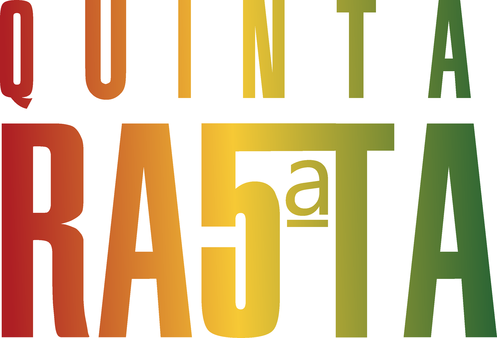

" Seja leve, que as estrelas vão brilhar pra você... "
A Banda Quinta Rasta foi formada no ano em 2015 por um grupo de amigos que amam a música como expressão da arte. Influenciados pelo forte movimento Reggae presente na época, Inicialmente por diversão, o hobbie criou uma proporção que não foi planejada pelos integrantes, o que incentivou cada membro a se dedicar inteiramente ao projeto.
Desde sua formação, a banda participou de diversos eventos culturais, realizados pela Prefeitura de Itapecerica da serra, como virada cultural e show da virada, onde foi prestigiada em uma entrevista de réveillon realizada pela Rede Globo no jornal SPTV primeira edição.
Já fez parte de uma das atrações do Natal Iluminado da Prefeitura de Embu das Artes. Participou ainda do evento Monga Verão, cedido pela Prefeitura de Mongaguá, onde dividiu palco com grandes artistas como Du casco e Falamansa entre outros.
Em sua jornada, a Quinta Rasta se apresentou junto a grandes artistas como Planta e Raiz, Israel Vibration e Adão Negro, Ponto de Equilibrio, entre outros. E fomos a 3ª colocada no concurso de bandas do encontro das tribos edição 2023.
Com energia, mensagens de positividade e a nossa interação com o publico são pontos fortes da Quinta Rasta, fazendo aquele momento único, que ficará no coração de cada pessoa presente em nossos shows. Duas vozes de atitudes e repleta de sentimentos bons e uma banda com a presença de palco inigualável e suas canções com mensagens de paz, amor, união, e boas vibrações.
A Quinta Rasta é formada por:
Fernando Magalhães - Vocalista e Guitarrista
Lucca Previatto - Vocalista e Guitarrista
Fernando Souza - Guitarrista Solo
Marcos Oliveira - Baixista
Rafael Carvallho - Baterista
Atualmente a banda possui oito singles disponíveis em todas as plataformas digitais, vídeo Clipe, uma live Session no canal oficial do Youtube. Novos lançamentos que ocorrerão brevemente em 2024.
Siga e ouça 5ª rasta nas redes sociais e nas plataformas digitais.

Fernando Magalhães
Vocal e Guitarrista

Lucca Previatto
Vocal e Guitarrista

Fernando Souza
Guitarrista Solo

Marcos Oliveira
Baixista

Rafael Carvallho
Baterista
Quinta Rasta - Pulo de Pé
Quinta Rasta
São Paulo, SP